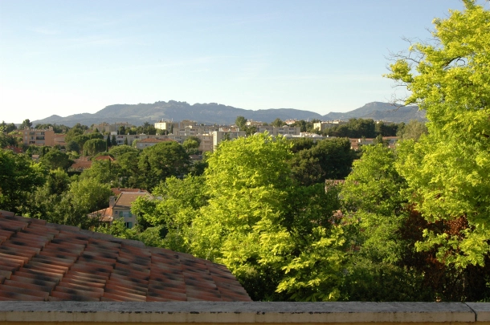
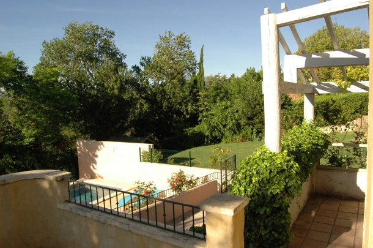
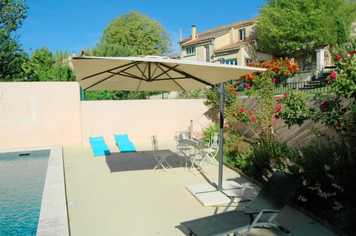
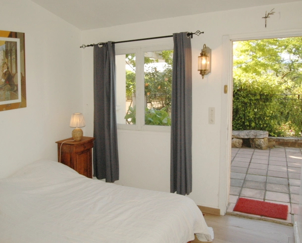
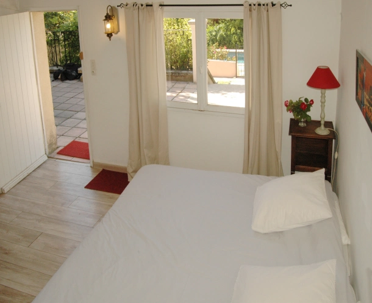
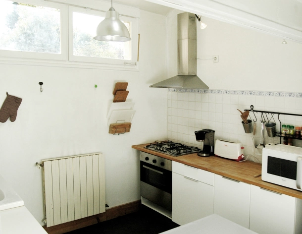
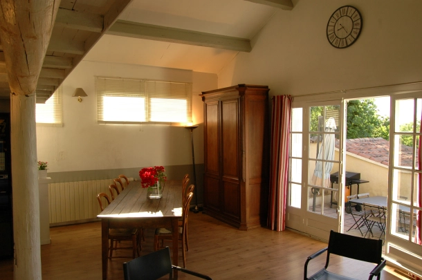
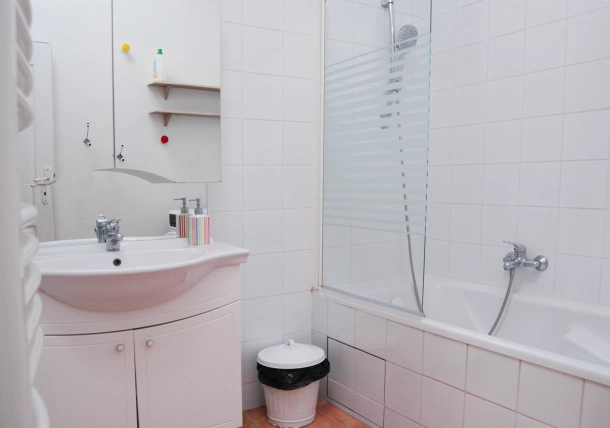
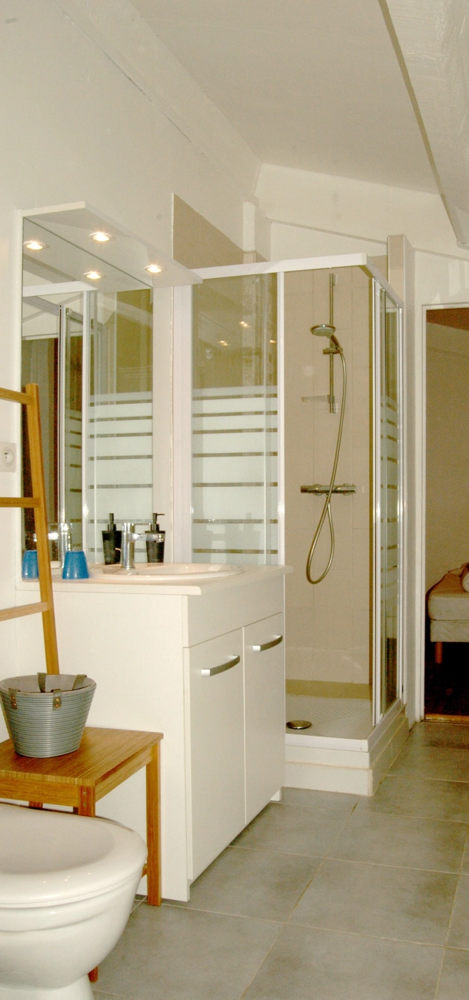

La Maison

Les Dentelles de Montmirail, depuis la terrasse du gîte, où vous buvez l’apéritif

Une vue du jardin à partir de la terrasse de la Maison

Vue partielle de la terrasse de la piscine

Une des chambres de l’annexe

Une des chambres de l’annexe

Vue partielle de la cuisine

Une petite partie de la salle séjour, ouvrant sur la terrasse avec sa plancha 2 feux

Salle de bain de la Maison

Salle d’eau de l’annexe
La maison constitue la partie maîtresse du gîte qui a été aménagé pour recevoir de grandes familles, des couples avec enfants, ou des groupes de type troupe de théâtre, etc.
Avec sa terrasse donnant sur la piscine , elle offre une vue magnifique au lever et au coucher du soleil, et est bien protégée de la chaleur du jour.
D’une surface de 90 m2, elle comprend :
- un grand salon/salle à manger avec de beaux volumes et pouvant accueillir 12 personnes à table.
- une cuisine équipée : lave vaisselle, four, four micro onde, congélateur, cafetière, réfrigérateur avec congélateur, etc.
- une salle de bain avec baignoire. Une précision qui a son importance quand on est nombreux : l’eau chaude est fournie en permanence, et n’est pas limitée par la taille d’un ballon.
- 1 chambre parentale avec lit double pouvant être séparé en 2 lits simples.
- 1 chambre pour enfants avec 1 lit superposé (2 couchages), 1 lit simple , une mezzanine comprenant 2 couchages.
- 1 entrée, avec 1 sèche linge et 1 frigidaire supplémentaire
L’ accès au gite se fait par une « ruelle » privative directement en bas du grand escalier d’arrivée.
La surface total du gîte est portée à 150 m2 en comprenant l’annexe et le studio.
En option peuvent être fournis, avec supplément, le ménage de sortie de la période louée, la location de draps et celle de paires de linge de toilette.